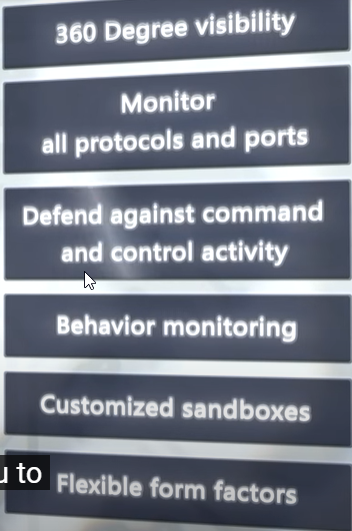

Ameaça persistente avançada (APT):
- ataques realizados/ patrocinados por estados Nações/
- Criadas por um grupo de desenvolvedores usando ferramentas internas que não são encontradas na deep web por exemplo.
- típico de ataques APT irem atrás da infraestrutura de um país, como redes elétricas, reatores nucleares ou dutos de combustível
!=
Ataques direcionados:
-não são realizados por nações.
- Trend micro Custom defense (add sandbox e forensic tools)
- os invasores podem se adaptar, ajustar e melhorar seus ataques para conter as defesas da vítima.
- os invasores têm um certo nível de especialização e recursos suficientes para executar seus esquemas por um longo período de tempo

Basics of a Data Breach:
violação de dados ocorre quando um cibercriminoso se infiltra com sucesso em uma fonte de dados e extrai informações confidenciais
Os hackers procuram esses dados porque eles podem ser usados para ganhar dinheiro duplicando cartões de crédito e usando informações pessoais para fraude, roubo de identidade e até chantagem.